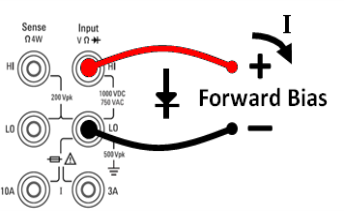

This section describes how to configure diode tests from the front panel. The range and resolution are fixed; the range is 10 VDC (with a 1 mA current source output).
Step 1: Configure the test leads as shown.

Step 2: Press on the front panel to open a menu that specifies whether the DMM will beep to indicate a successful diode test.
Diode measurements behave as follows:
| 0 to 5 V | voltage displayed on the front panel, and instrument beeps when signal transitions into the 0.3 to 0.8 V threshold (if beeping is enabled) |
| > 5 V | the front panel displays OPEN, and SCPI returns 9.9E37 |